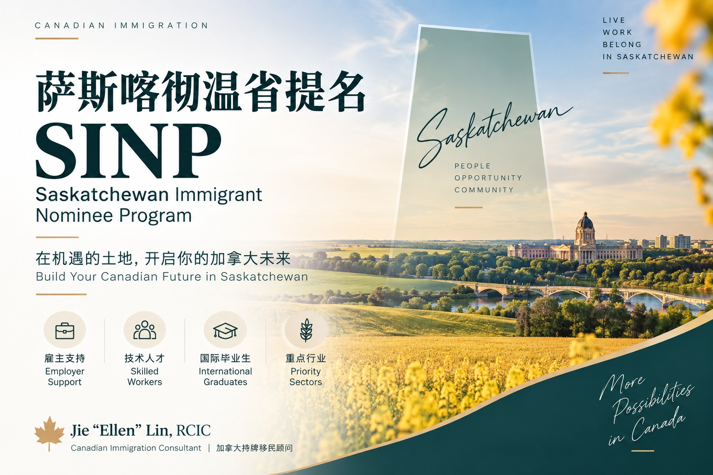

萨省省提名2026年最后一次受配额限制行业开放： 9月14日至15日开放550个工作职位名额
Read in English
萨省省提名计划（SINP）于 2026年9月3日 公布了今年最后一次受配偶限制行业 （capped sectors） Employer Job Approval开放安排。
此次开放集中在 2026年9月14日至15日， 涉及卡车运输、零售、住宿及餐饮服务四个行业， 合计接受 550个雇主职位， 并采取先到先得方式。
需要特别注意： 550个名额是SINP可以接收的 Employer Job Approval职位申请数量， 不是550份省提名， 也不是一次550人的省提名抽选。
开放时间及名额
| 开放时间 | 行业 | 职位名额 |
|---|---|---|
| 9月14日上午9:30 | 卡车运输业 | 150 |
| 9月14日上午9:30 | 零售业 | 175 |
| 9月14日下午1:30 | 住宿业 | 50 |
| 9月15日下午1:30 | 餐饮服务业 | 175 |
以上时间均为 萨斯喀彻温省当地时间。
哪些申请人可以利用这次机会？
此次开放并不是面向所有海外申请人。
根据SINP公布的安排， 相关外国工人需要满足以下主要条件：
- 已经是该萨省雇主的 现有员工；
- 目前持有有效的加拿大临时居民身份；
- 在递交Employer Job Approval时， 当前工作许可剩余有效期 不超过6个月；
- 雇主及职位属于本次开放的 相关受配额限制行业。
因此，对于目前仍然在海外、 尚未开始为萨省雇主工作的申请人， 这次开放通常并不是一个 可以直接进入SINP的机会。
为什么这次开放值得特别关注？
这是SINP 2026年最后一次受限制行业开放。
萨省同时表示， 原本预留给之后开放批次的 部分提名空间， 也将在9月集中释放。
因此，对于已经在萨省 卡车运输、零售、酒店住宿 或餐饮服务行业工作的临时外国工人而言， 这可能是今年非常重要的一次申请窗口。
由于职位数量有限， 而且采取先到先得方式， 实际准备工作不能等到开放当天才开始。
雇主和申请人现在应该做什么？
如果目前已经在上述行业 为萨省雇主工作， 建议立即确认：
- 雇主所属行业是否属于本次开放范围；
- 当前工作许可的准确到期日期；
- 是否满足 “工作许可剩余有效期不超过6个月” 的条件；
- 雇主是否已经准备好 Employer Job Approval所需资料；
- OASIS系统中的申请 是否已经提前建立并完成草稿。
符合条件的雇主最好在开放前 完成材料准备， 在相应行业开放后尽快递交。
对于工作许可即将到期的申请人， 还需要同时考虑身份维持 及后续工作许可安排， 而不应只关注SINP省提名本身。
这次开放说明了什么？
这次安排再次说明， 省提名机会并不只是取决于 申请人的职业或是否满足基本资格。
申请时间、 工作许可有效期、 雇主是否提前完成准备， 以及有限的职位名额， 都可能直接影响申请机会。
如果您目前正在萨省的 卡车运输、零售、住宿 或餐饮服务行业工作， 应尽早核对工作许可、 雇主和职位情况， 不要等到开放当天才开始准备。
SINP Announces Final 2026 Capped-Sector Intake: 550 Employer Positions to Open in September
On September 3, 2026, the Saskatchewan Immigrant Nominee Program announced its final 2026 intake schedule for Employer Job Approval applications in capped sectors.
The intake will take place on September 14 and 15, 2026, covering trucking, retail, accommodation and food services.
A total of 550 employer positions will be accepted on a first-come, first-served basis.
Intake Schedule
- September 14 at 9:30 a.m.: Trucking – 150 positions;
- September 14 at 9:30 a.m.: Retail – 175 positions;
- September 14 at 1:30 p.m.: Accommodation – 50 positions;
- September 15 at 1:30 p.m.: Food Services – 175 positions.
The total intake is 550 positions.
These 550 spaces represent the number of employer positions that may be submitted for job approval. They are not 550 provincial nominations or invitations to apply.
Who May Benefit from This Intake?
This intake is not generally intended for workers applying directly from outside Canada.
Under the announced intake arrangements, the foreign worker must:
- already be employed by the Saskatchewan employer;
- hold valid temporary resident status in Canada;
- have no more than six months remaining on the current work permit at the time of submission; and
- work for an employer and in a position falling within one of the applicable capped sectors.
Workers who are currently overseas and have not yet started working for the Saskatchewan employer would therefore generally not benefit directly from this intake.
Why Is This Intake Important?
This is the final capped-sector intake for 2026.
SINP has also indicated that some nomination capacity originally reserved for later intake periods will be brought forward and released in September.
For temporary foreign workers already employed in Saskatchewan's trucking, retail, accommodation or food-service sectors, this may therefore be an important opportunity before the end of the year.
Because applications will be accepted on a first-come, first-served basis, employers should not wait until the intake opens to begin preparing.
What Should Employers and Workers Do Now?
Potential applicants should immediately review:
- whether the employer falls within one of the eligible sectors;
- the exact expiry date of the worker's current work permit;
- whether the worker meets the six-month work-permit requirement;
- whether the employer has all documents required for the job approval application; and
- whether an application draft has already been prepared in the OASIS system.
Eligible employers should have their applications ready in advance so they can submit as soon as the applicable intake opens.
Workers whose work permits are approaching expiry should also consider their temporary status and future work permit strategy rather than relying solely on a future SINP nomination.
Final Reminder
This intake highlights an important reality of provincial immigration programs: eligibility alone does not always guarantee an opportunity to apply.
Timing, work permit validity, employer preparation and limited intake spaces can all affect the outcome.